Released: January 15, 2014
Next Release: January 23, 2014
Midwest propane markets tighten further on cold weather
The Upper Midwest is facing a tight market for propane this winter, as evidenced by a 1.5-million-barrel inventory draw in the region for the week ending last Friday, January 10.
At the beginning of November, the corn harvest in the Upper Midwest (Minnesota, Iowa, Wisconsin, Nebraska) pulled large quantities of propane from distribution terminals for corn drying. Between late-November and December, supply disruptions prevented these terminals from replenishing their supplies of propane. With the onset of severely cold weather this past week, propane supplies are extremely tight, forcing emergency measures to ensure supply and increasing the Midwest spot price of propane at Conway, Kansas compared with the spot price on the Gulf Coast at Mont Belvieu, Texas. Propane prices in the Midwest will likely need to rise to keep propane in the region rather than flowing south to the Gulf Coast.
In October, EIA noted the effects of increased production of domestic oil and gas on propane flows between the Midwest and the Gulf Coast. Infrastructure changes have allowed the growing supplies of propane and other hydrocarbon gas liquids (HGL) from increased production to flow south from and through the Midwest to supply Gulf Coast petrochemical demand and also to gain access to the global market. Recently, the onset of severely cold weather in the Midwest has increased regional demand for propane and other heating fuels.
{kind=link}
Even before the recent cold snap, Midwest propane markets were relatively tight compared with those on the Gulf Coast for other weather-related reasons. In addition to space heating needs, the Midwest uses propane for agricultural applications such as corn drying. For corn to be stored, it first needs to be dried, using large-scale heaters that often use propane for fuel. A late-2013 corn harvest, along with cold wet weather, resulted in strong demand for propane at distribution terminals in the Upper Midwest. For the week ending November 1, Midwest propane inventories dropped more than 2 million barrels, the largest single-week stock draw in November since 1993. This demand prompted a strong price response, and propane at Conway moved to a 3-cent-per-gallon (/gal) premium over Mont Belvieu during the first week of November, the first such premium in almost three years.
After the harvest, logistical problems prevented the region from fully replenishing inventories before the onset of winter. The Upper Midwest is supplied with propane by pipelines (Mid-American and ONEOK) flowing north from Conway (home to 7% of the nation's propane storage), the Cochin pipeline coming south from Canada, and from rail deliveries (Figure 1). The Cochin pipeline, which delivers HGL from Canada to the Upper Midwest, was out of service for maintenance from late November to December 20 and unavailable to deliver supplies. Rail transportation disruptions, both due to weather and other factors, prevented deliveries from Mont Belvieu and Conway, as well as from Canada.
Since early 2010, propane prices at Mont Belvieu, the nation's largest propane storage and market hub, were higher than at Conway by as much as 30 cents/gal, prompting propane supplies to flow south on newly expanded southbound pipelines. A large local petrochemical demand and access to the global propane market via expanded HGL export capacity supported Mont Belvieu prices and encouraged propane from the Rockies (PADD 4) and elsewhere in the Midwest to flow south.
Low temperatures and winter storms closely followed the corn harvest, and logistical problems continued. The colder weather increased residential space heating demand at a time when markets were already tight. As demand outpaced supply, inventories dropped further, by 1.5 million barrels and 1.2 million barrels for the weeks ending December 6 and January 3, respectively. By January 3 (Figure 2), prices had vaulted to a 21-cent/gal premium to Mont Belvieu.
{kind=link}
Strong back-to-back demand surges, low inventories, and supply challenges forced emergency measures to ensure residential adequacy of propane. Several Midwestern states responded by suspending limitations on hours of service for propane delivery truck drivers. Trade press reported long waiting lines at propane distribution terminals in the Upper Midwest, as well as supply of propane by truck from as far away as Oklahoma. Since the week ending October 11, Midwest propane inventory levels have dropped by 12.8 million barrels, compared with a drop of 7.3 million barrels for the same period's five-year average.
Because global prices for propane are significantly higher than U.S. prices, propane supplies will continue to move to Mont Belvieu for export. Midwest propane prices will rise to keep marginal supplies in the region when they are needed.
The Midwest will also need to prepare for the coming reversal of Kinder Morgan's Cochin Pipeline, which delivers HGL from Canada to the upper Midwest. Kinder Morgan plans to reverse the flow to deliver light condensate to Canada. This reversal will change supply dynamics in the Midwest. However, this situation may also improve the economic prospects for infrastructure projects to process and transport HGL from the Bakken formation in North Dakota and Montana to Midwest markets farther east.
Gasoline price flat again while diesel fuel falls
The U.S. average retail price of regular gasoline decreased less than one cent to remain at $3.33 per gallon for the third consecutive week as of January 13, 2014, two cents higher than last year at this time. Prices increased three cents in the Midwest and Rocky Mountains, to $3.25 per gallon and $3.15 per gallon, respectively, while decreasing in all other regions of the nation. The East Coast price fell three cents to $3.41 per gallon, and prices on the Gulf and West Coasts both were down two cents, to $3.11 per gallon and $3.53 per gallon, respectively.
The national average diesel fuel price fell two cents to $3.89 per gallon, a penny lower than last year at this time. Prices decreased in all regions of the nation, with the largest decrease coming on the West Coast, where the price fell four cents to $4.00 per gallon. The Midwest price was down three cents to $3.85 per gallon, and both Gulf Coast and Rocky Mountain prices lost two cents, to $3.78 per gallon and $3.89 per gallon, respectively. The East Coast price was $3.94 per gallon, a penny lower than last week.
Propane inventories fall
U.S. propane stocks fell by 3.8 million barrels to end at 38.7 million barrels last week, 25.3 million barrels (39.6%) lower than a year ago. Gulf Coast regional inventories dropped by 1.9 million barrels and Midwest stocks decreased by 1.5 million barrels. Rocky Mountain/West Coast inventories decreased by 0.2 million barrels, and East Coast stocks fell by 0.1 million barrels. Propylene non-fuel-use inventories represented 9.1% of total propane inventories.
Residential propane price increases slightly, heating oil price decreases
Residential heating oil prices decreased nearly 2 cents per gallon to reach a price of $4.00 per gallon during the period ending January 13, 2014. This is less than 1 cent per gallon lower than last year's price at this time. Wholesale heating oil prices increased 2 cents per gallon last week to $3.09 per gallon.
The average residential propane price increased by over 1 cent per gallon last week to $2.84 per gallon, almost 58 cents per gallon higher than the same period last year. Wholesale propane prices rose 2 cents per gallon to just under $1.71 per gallon as of January 13, 2014.
Text from the previous editions of This Week In Petroleum is accessible through a link at the top right-hand corner of this page.
| 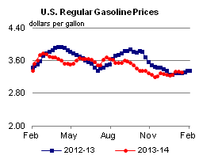 | 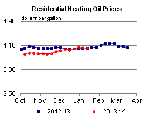 | ||||||
| 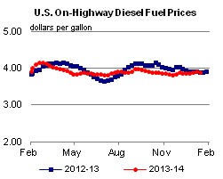 | 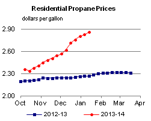 | ||||||
| Retail Data | Change From Last | Retail Data | Change From Last | ||||
| 01/13/14 | Week | Year | 01/13/14 | Week | Year | ||
| Gasoline | 3.327 | Heating Oil | 4.002 | ||||
| Diesel Fuel | 3.886 | Propane | 2.843 | ||||
| 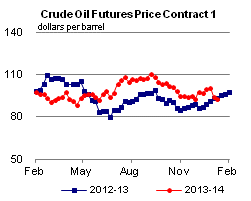 | 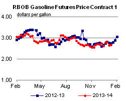 | ||||||||||||||||||||||||||
|
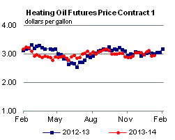 | ||||||||||||||||||||||||||
| *Note: Crude Oil Price in Dollars per Barrel. | |||||||||||||||||||||||||||
| 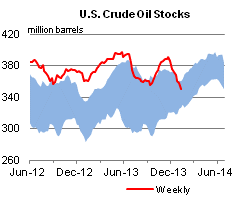 | 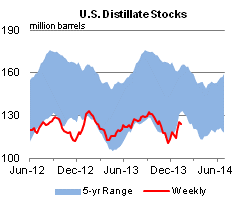 | ||||||
| 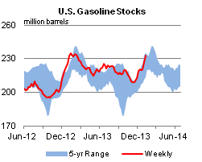 | 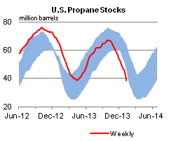 | ||||||
| Stocks Data | Change From Last | Stocks Data | Change From Last | ||||
| 01/10/14 | Week | Year | 01/10/14 | Week | Year | ||
| Crude Oil | 350.2 | Distillate | 124.0 | ||||
| Gasoline | 233.1 | Propane | 38.654 | ||||